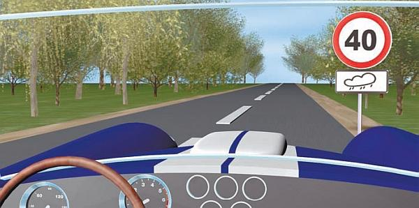
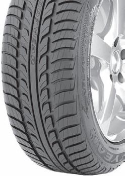

Как вести машину по мокрой дороге и во время дождя.
Особую опасность для дорожного движения всегда представляют собой самые первые капли дождя. Почему? Ведь в начале дождя дорога остается относительно сухой и чтобы ее как следует намочить, дождь должен идти в течение хотя бы 5–10 минут (правда, это условная величина, ведь все зависит от интенсивности дождя).
Дело в том, что первые капли, смешиваясь с дорожной пылью и грязью, образуют своеобразную вязкую кашицу, которая разносится колесами автомобилей по поверхности проезжей части и как бы смазывает ее, делая скользкой и ухудшая сцепление колес с дорожным покрытием. Поэтому при первых каплях дождя водитель должен ехать с повышенным вниманием и соблюдением мер предосторожности (уменьшить скорость движения, увеличить дистанцию до впереди идущих транспортных средств и т. п.) (рис. 5.1).

Рис. 5.1. Ограничение скорости при влажном дорожном покрытии
Не все водители отдают себе отчет в том, что самые обычные лужи на проезжей части могут быть весьма опасными. Поэтому и не рекомендуется проезжать их на высокой скорости, ведь лужи бывают разной глубины, кроме того, под водой может скрываться все что угодно: кирпич или камень, открытый канализационный люк, торчащий из-под земли металлический штырь. После движения через лужу у автомобиля также намокают тормозные диски и колодки, что негативно отражается на эффективности торможения. А при попадании влаги в инжектор может заглохнуть мотор.
Поэтому, чтобы не было лишних неприятностей, проезжайте через лужу только в том случае, когда иного выхода нет.
Во время проливного дождя уровень воды на проезжей части может быть выше, чем глубина рисунка протектора (рис. 5.2). Передвигаться в таком случае с высокой скоростью опасно, так как колеса автомобиля не будут касаться поверхности проезжей части, а будут только скользить по воде. Иначе говоря, вода в такой ситуации играет роль своеобразной «смазки» между колесами и дорожным покрытием. Очевидно, что это может привести к серьезным неприятностям.

Рис. 5.2. При частой езде по мокрой дороге используйте специальную «дождевую» резину
Такое скольжение автомобиля по воде на проезжей части получило название «аквапланирование». При аквапланировании водитель полностью теряет контроль над машиной, и все попытки изменить направление движения с помощью руля или уменьшить скорость и остановиться с помощью тормозов будут безуспешны.
Поэтому аквапланирование – это очень опасное явление, возникающее, когда слой воды, покрывающий проезжую часть, достигает всего 1 сантиметра. Поскольку во время движения невозможно визуально определить толщину слоя воды, можно применить следующий способ: если в воде четко отражаются окружающие объекты – машина может «поплыть».
Возникновение аквапланирования во многом зависит:
> от скорости, с которой едет автомобиль. Если она менее 80 километров в час, скорее всего, ваша машина не будет подвержена полному аквапланированию. Но не следует забывать, что частичное аквапланирование при наличии сопутствующих факторов может произойти и на невысоких скоростях (менее 40 километров в час);
> толщины слоя воды на дорожном покрытии: чем толще этот слой, тем больше шансов, что машина «поплывет»;
> состояния шин на колесах транспортного средства (величины износа протектора, его рисунка, а также давления в шинах).
Как бы там ни было, стремитесь не допускать попадания машины в воду на дороге, старайтесь объезжать водный участок, а если это невозможно, двигайтесь по нему на минимальной скорости, с соблюдением мер предосторожности.
Учтите, что при движении в сильный дождь в некоторых машинах начинаются проблемы с зажиганием: автомобиль во время езды характерно «дергается», двигатель работает нестабильно и может вообще заглохнуть. Причиной может являться попадание влаги в инжектор, отсыревшие провода высокого напряжения либо иные элементы системы зажигания. В этом случае рекомендуется побрызгать на отсыревшие детали специальной водовытесняющей жидкостью (например, ВД-40), которую желательно иметь в автомобиле, особенно при дальних поездках. В противном случае не исключено, что вам придется ждать на обочине, пока отсыревшие элементы системы зажигания не просохнут самостоятельно.